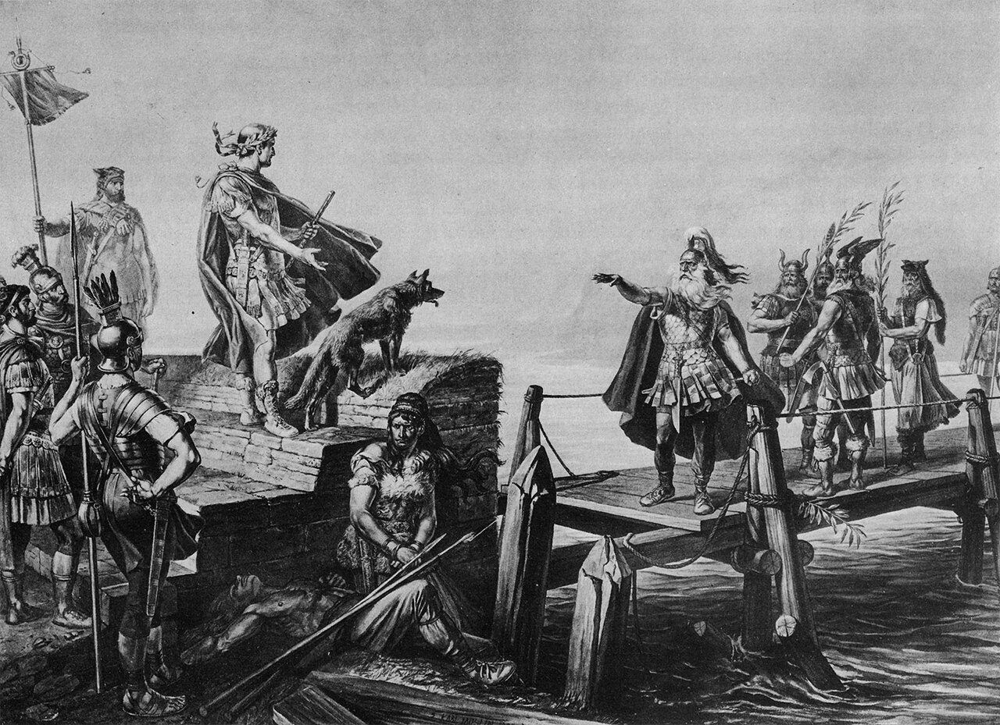

Teil I · Kelten, Römer und Klöster
Kapitel 1
Helvetier und Römer
58 v. Chr. – 260
Ein keltisches Volk bricht auf, um sich in Gallien neue Wohnsitze zu suchen – und wird von Caesar zurückgeschickt. Danach machen die Römer das Land zwischen Jura und Alpen für rund 400 Jahre zu einem Teil ihres Weltreichs.

Am 28. März 58 v. Chr. trafen sich am Ufer der Rhone bei Genf Zehntausende Menschen mit Ochsenkarren, Vieh und Vorräten für drei Monate. Die Helvetier, ein keltisches Volk aus dem Mittelland, wollten ihre Heimat für immer verlassen und im Westen Galliens neues Land suchen. Ihr Weg endete wenige Monate später auf einem Schlachtfeld in Burgund – besiegt von einem ehrgeizigen römischen Statthalter namens Gaius Julius Caesar. Mit diesem Zusammenstoss beginnt die ausführlich überlieferte Geschichte der Schweiz.
Kelten zwischen Jura und Alpen
Woher wissen wir überhaupt etwas über die Menschen, die vor über 2000 Jahren hier lebten? Die Kelten selbst haben keine Geschichtsbücher hinterlassen. Fast alles, was wir über die Ereignisse von 58 v. Chr. lesen können, stammt von einem einzigen Mann: Caesar. In seinen «Commentarii de bello Gallico», dem Bericht über den Gallischen Krieg, schildert er seinen Feldzug gegen die Helvetier ausführlich – aber er schrieb ihn, um in Rom als erfolgreicher und gerechter Feldherr dazustehen. Seine Zahlen und Begründungen müssen deshalb mit Vorsicht gelesen werden.
Die zweite grosse Quelle ist die Archäologie. Ausgrabungen von Siedlungen, Gräbern und Opferplätzen, Münzfunde und die Altersbestimmung von Bauholz anhand der Jahrringe erlauben es, Caesars Bericht zu überprüfen – und manchmal zu widerlegen. Später kommen römische Inschriften auf Grabsteinen, Altären und Meilensteinen dazu.
Ein Fundort in der heutigen Schweiz hat sogar einer ganzen Epoche ihren Namen gegeben. 1857 entdeckte der Fischer Hans Kopp im Auftrag des Sammlers Friedrich Schwab bei La Tène, am Nordende des Neuenburgersees, alte Holzpfähle im Wasser und holte rund vierzig Eisenobjekte herauf, darunter vierzehn Schwerter. Als die erste Juragewässerkorrektion in den 1870er-Jahren den Seespiegel senkte, kamen noch viel mehr Funde zum Vorschein: über 2500 Waffen, Werkzeuge, Schmuckstücke und Münzen, dazu die Reste von zwei Brücken sowie Skelette von Menschen und Tieren. Viele Waffen waren absichtlich verbogen worden – vielleicht war La Tène ein Ort, an dem man den Göttern Opfer darbrachte. Der schwedische Archäologe Hans Hildebrand schlug in den 1870er-Jahren vor, die jüngere Eisenzeit nach diesem Fundort zu benennen. Seither heisst die Zeit von etwa 450 v. Chr. bis um Christi Geburt in ganz Europa Latènezeit.

Waffen aus La Tène Eiserne Schwerter und Lanzenspitzen aus dem Fundort La Tène, ausgestellt im Laténium in Hauterive bei Neuenburg. Das Eisen hat sich im feuchten Boden des Seeufers über 2000 Jahre erhalten. Die langen Hiebschwerter waren die typische Waffe keltischer Krieger.
Jean-Pierre Dalbéra · CC BY 2.0 · Wikimedia Commons
.jpg){kind=link}
Die Helvetier lebten im Mittelland zwischen Jura, Rhein und Genfersee. Caesar zufolge waren sie in vier Gaue (lateinisch pagi) eingeteilt; einer davon waren die Tiguriner. Nordwestlich davon, um das Rheinknie bei Basel, siedelten die Rauriker, in den Alpentälern Graubündens die Räter und im Wallis vier weitere keltische Stämme. Die Helvetier waren Bauern, Viehzüchter und geschickte Handwerker. Sie prägten eigene Münzen aus Gold und Silber und schrieben – wenn sie schrieben – mit griechischen Buchstaben.
Im 2. und 1. Jahrhundert v. Chr. entstanden befestigte Grosssiedlungen, die Caesar oppida nannte, also «Städte». Archäologen kennen solche Orte etwa auf der Engehalbinsel bei Bern, auf dem Münsterhügel in Basel, auf dem Lindenhof in Zürich, auf dem Üetliberg und auf dem Mont Vully über dem Murtensee. Dort umschloss eine 600 Meter lange Befestigung eine Fläche von rund 50 Hektaren.

- Die Mauer: senkrechte Holzpfosten in einer Front aus trocken geschichteten Steinen. Ein Teil davon wurde 2001/02 auf dem Mont Vully nachgebaut.
- Der hölzerne Torbau mit seinem steilen Dach kontrollierte, wer ein und aus ging.
- Ochsen zogen die schweren Karren – solche Wagen nahmen die Helvetier auch auf ihren Auszug 58 v. Chr. mit.
- Ein Reiter mit Lanze und ovalem Schild, wie ihn keltische Krieger trugen.
Das Oppidum auf dem Mont Vully Modell des keltischen Tors auf dem Mont Vully im Laténium. Es zeigt, wie man sich das Leben am Eingang einer solchen befestigten Siedlung um 100 v. Chr. vorstellt: Bauern mit Ochsenkarren, Reiter und Fussgänger ziehen durch das Tor.
Le Stempf · CC BY-SA 4.0 · Wikimedia Commons

58 v. Chr.: Der Auszug nach Gallien
Laut Caesar war es ein Adliger namens Orgetorix, «bei den Helvetiern bei Weitem der vornehmste und reichste», der seine Landsleute zum Auszug überredete. Die Helvetier, schreibt Caesar, fühlten sich in ihrem Gebiet eingeengt und waren von ständigen Kämpfen mit den Germanen jenseits des Rheins zermürbt. Orgetorix selbst soll heimlich nach der Königswürde gestrebt haben. Als das herauskam, starb er unter ungeklärten Umständen, wohl 60 v. Chr. Die Helvetier hielten trotzdem an ihrem Plan fest.
Bevor sie aufbrachen, steckten sie nach Caesars Bericht ihre Siedlungen in Brand: «ihre Städte, etwa zwölf an der Zahl, etwa 400 Dörfer und die übrigen Einzelhöfe». Niemand sollte auf die Idee kommen, umzukehren. Am 28. März 58 v. Chr. versammelte sich der Zug am Rhoneufer bei Genf, zusammen mit den Raurikern und weiteren Nachbarvölkern. Der kürzeste Weg nach Westen führte durch die römische Provinz in Südgallien (später Gallia Narbonensis genannt), die damals bis Genf reichte.
Doch dort war Caesar zuständig. Er liess die Rhonebrücke bei Genf abbrechen und am Südufer des Flusses einen Wall errichten. Die Helvetier mussten auf einen beschwerlichen Weg ausweichen: durch einen engen Durchgang zwischen Jura und Rhone ins Gebiet der Sequaner. Caesar folgte ihnen mit seinen Legionen. Als die Helvetier die Saône (lateinisch Arar) überquerten, griff er die Nachhut an, die Tiguriner, und vernichtete sie. Dann liess er an einem einzigen Tag eine Brücke über den Fluss bauen – die Helvetier hatten für ihren Übergang zwanzig Tage gebraucht.
Beeindruckt schickten die Helvetier eine Gesandtschaft. Ihr Anführer war Divico, derselbe Mann, der rund fünfzig Jahre zuvor, 107 v. Chr., mit den Tigurinern ein römisches Heer bei Agen an der Garonne geschlagen hatte. Er muss damals ein sehr alter Mann gewesen sein; einige Forscher bezweifeln deshalb, dass es wirklich derselbe Divico war. Caesar verlangte Geiseln als Pfand für gutes Benehmen. Divicos Antwort ist berühmt geworden.
Die Verhandlungen scheiterten. Einige Wochen später, noch im Sommer 58 v. Chr., kam es in der Nähe von Bibracte, dem Hauptort der Häduer auf dem Mont Beuvray in Burgund, zur Entscheidungsschlacht. Wo genau gekämpft wurde, ist bis heute umstritten. Die Helvetier verteidigten sich bis in die Nacht hinter ihrer Wagenburg, unterlagen aber den kampferfahrenen Legionen.

Die Schlacht bei Bibracte Karl Jauslin stellte um 1900 den Kampf als wildes Getümmel dar: Von rechts stürmen römische Legionäre mit grossen, gewölbten Rechteckschilden in endlosen Reihen heran, links wehren sich die Helvetier mit Lanzen und runden Schilden. Im Hintergrund liegen Hügel und ein Fluss. Das Bild beruht auf Caesars Bericht, nicht auf archäologischen Kenntnissen.
Karl Jauslin (1842–1904) · Public domain · Wikimedia Commons

Nach der Niederlage tat Caesar etwas Unerwartetes: Er befahl den Überlebenden, in ihre Heimat zurückzukehren und die verbrannten Siedlungen wieder aufzubauen. Der Grund war nüchtern. Das fruchtbare Mittelland sollte nicht leer bleiben, damit nicht die Germanen von jenseits des Rheins einwanderten und dann direkt an die römische Provinz grenzten. Die Helvetier wurden zu Verbündeten Roms und sollten die Grenze am Rhein sichern.
Im Lager der Helvetier fanden die Römer Listen, «mit griechischen Buchstaben geschrieben». Nach Caesar zählten sie 368 000 Menschen, darunter 263 000 Helvetier und 23 000 Rauriker; 92 000 davon seien Krieger gewesen. Heimgekehrt seien 110 000. Viele Historiker halten diese Zahlen für stark übertrieben – je grösser der Gegner, desto grösser der Ruhm des Siegers.
- Schlacht
- Stadt
- Römischer Ort
- Ort
- Pass
Helvetier und Römer Die Pfeile zeigen ungefähre Wege: den Zug der Helvetier 58 v. Chr. von Genf durch das Gebiet der Sequaner über die Saône bis Bibracte, den Vormarsch des Tiberius 15 v. Chr. von Gallien an den Bodensee und den Weg römischer Truppen über den Julier ins Rheintal. Die Quadrate markieren römische Städte und Lager.
Karte: eigene Darstellung · Länder, Flüsse, Seen: Natural Earth (gemeinfrei)
Rom erobert die Alpen
Bibracte machte die Helvetier zu Verbündeten, aber noch nicht zu Untertanen Roms. Schon 57 v. Chr. versuchte ein Legat Caesars, Servius Galba, den Weg über den Grossen St. Bernhard zu sichern, und überwinterte in Octodurus, dem heutigen Martigny. Die Walliser Stämme griffen sein Lager an, und Galba musste sich zurückziehen. Um 45 v. Chr. gründete Rom am Genfersee die Kolonie Colonia Iulia Equestris (Nyon), und 44 v. Chr. rief Lucius Munatius Plancus am Rhein die Kolonie Augusta Raurica aus – zunächst nur auf dem Papier.
Ernst wurde es unter Kaiser Augustus. Er wollte die Alpenpässe kontrollieren, die Italien mit Gallien und dem Donauraum verbanden. 15 v. Chr. zogen seine Stiefsöhne Drusus und Tiberius in einer Zangenbewegung in die Alpen: Drusus von Süden über den Brenner, Truppen unter seinem Kommando wohl auch über den Julier ins Rheintal; Tiberius von Westen durch das Mittelland an den Bodensee, wo er die Vindeliker mit einer Flotte besiegte. Innerhalb eines Sommers waren die Zentralalpen und ihr nördliches Vorland römisch.
Augustus liess seinen Sieg feiern. Hoch über Monaco, bei La Turbie, entstand 7/6 v. Chr. ein gewaltiges Siegesdenkmal, das Tropaeum Alpium. Seine Inschrift zählte 46 unterworfene Alpenvölker auf, darunter die vier Stämme des Wallis. Wir kennen den Text vollständig, weil der römische Gelehrte Plinius der Ältere ihn abgeschrieben hat.

Das Siegesdenkmal von La Turbie Die Ruine des Tropaeum Alpium erhebt sich noch heute über dem Dorf La Turbie an der französischen Riviera. Der Säulenkranz wurde im 20. Jahrhundert teilweise wieder aufgebaut. Auf dem Denkmal standen die Namen der Alpenvölker, die Augustus unterworfen hatte.
Anne Rodelato · CC BY-SA 3.0 · Wikimedia Commons

Das Gebiet der heutigen Schweiz wurde unter mehrere Provinzen aufgeteilt: Das Mittelland gehörte zunächst zur Provinz Gallia Belgica, ab dem späten 1. Jahrhundert zu Obergermanien (Germania superior). Graubünden und die Ostschweiz gehörten zur Provinz Rätien, das Wallis bildete einen eigenen Bezirk, und das Tessin war Teil Italiens. Eine Einheit wie heute gab es nicht.
Um 14 n. Chr. verlegte Rom die 13. Legion nach Vindonissa, dem heutigen Windisch bei Brugg, wo Aare, Reuss und Limmat zusammenfliessen. Hier entstand das einzige Legionslager auf heutigem Schweizer Boden, später in Stein ausgebaut, mit einer Fläche von 21 Hektaren. Etwa 5000 bis 6000 Soldaten wachten von hier aus über die Rheingrenze. Nach der 13. Legion lagen hier die 21. Legion «Rapax» («die Räuberische») und ab 70 die 11. Legion. 101 zog Kaiser Trajan die Truppe an die Donau ab, denn die Grenze lag inzwischen weit im Norden, im heutigen Süddeutschland.

Das Legionslager Vindonissa Modell im Vindonissa-Museum in Brugg: Dicht an dicht stehen die rot gedeckten Kasernen und Gebäude des Lagers, umgeben von Mauer und Gräben. Vorne rechts ist das Lagertor zu sehen. In der Blütezeit lebten hier Tausende Soldaten, Händler und Handwerker.
KGS Brugg · CC BY-SA 4.0 · Wikimedia Commons

Für die Helvetier war die Nähe der Legion nicht nur ein Segen. Im Bürgerkriegsjahr 69 n. Chr. stellten sie sich auf die Seite des falschen Kaisers. Die 21. Legion zog daraufhin plündernd durch ihr Land. Der Geschichtsschreiber Tacitus berichtet, wie die Truppen unter Aulus Caecina den Badeort Aquae Helveticae (Baden) verwüsteten und die Helvetier bis auf den Berg Vocetius – wohl den Bözberg – verfolgten.
«Viele Tausend Menschen wurden erschlagen, viele als Sklaven verkauft.»
Tacitus, Historien I,68 (um 105 n. Chr.), eigene Übersetzung
Aventicum ergab sich. Der helvetische Anführer Julius Alpinus wurde hingerichtet, die Stadt selbst nach einer bewegenden Bittrede der Gesandten verschont. Tacitus nennt die Helvetier ein Volk, «einst durch Waffen und Männer, später nur noch durch die Erinnerung an seinen Namen berühmt». Es war das letzte Mal, dass die Helvetier als eigenständige Kraft in der Geschichte auftraten.
Städte, Strassen und Gutshöfe
Nach 69 folgten fast zwei Jahrhunderte Frieden. Kaiser Vespasian, dessen Vater bei den Helvetiern als Geldverleiher tätig gewesen war, erhob den Hauptort der Helvetier um 70 n. Chr. zur Kolonie. Aventicum (Avenches) wurde mit einer 5,2 Kilometer langen Stadtmauer mit 73 Türmen umgeben, die allerdings eine viel grössere Fläche einschloss, als je bebaut wurde. Auf dem Höhepunkt lebten hier vielleicht über 20 000 Menschen. Es gab ein Theater, ein Amphitheater für bis zu 16 000 Zuschauer, Thermen und einen grossen Tempelbezirk, von dem eine einzelne, zwölf Meter hohe Säule übrig blieb. Weil auf ihr lange Störche nisteten, heisst die Ruine «Cigognier» – Storchennest.

Die Goldbüste von Avenches Die Büste von Kaiser Marc Aurel (161–180) ist 33,5 Zentimeter hoch und wiegt fast 1,6 Kilogramm. Gefunden wurde sie 1939 in einem Abwasserkanal beim Tempel des Cigognier, wo man sie wohl in Kriegszeiten versteckt hatte. Das Foto zeigt eine originalgetreue Kopie im Römermuseum Avenches.
Carole Raddato · CC BY-SA 2.0 · Wikimedia Commons
,_Mus%C3%A9e_romain_d%27Avenches,_Switzerland_01.jpg){kind=link}
Etwas kleiner war Augusta Raurica bei Augst und Kaiseraugst. Gebaut wurde die Stadt ab etwa 15 v. Chr., nach dem Alpenfeldzug. Um 200 n. Chr. lebten hier rund 15 000 Menschen. Die Stadt besass ein Forum mit Tempel, Gerichtshalle (Basilika) und Ratsgebäude, mehrere Tempelbezirke, ein Heilbad und Thermen. Am Rhein standen Glaswerkstätten, in der Stadt töpferten Familienbetriebe Geschirr für die ganze Umgebung.

Das Theater von Augusta Raurica Das gallo-römische Theater von Augst gilt als die besterhaltene antike Theateranlage nördlich der Alpen. In seiner letzten Ausbauphase um 180/190 bot es Platz für 10 000 bis 12 000 Zuschauer. Heute finden auf den restaurierten Sitzreihen wieder Konzerte und Aufführungen statt.
Ad Meskens · CC BY-SA 3.0 · Wikimedia Commons

Verbunden waren die Städte durch ein Netz von Strassen. Die wichtigste Achse führte vom Genfersee über Aventicum und Solothurn nach Vindonissa und weiter an den Rhein. Über den Grossen St. Bernhard (2469 m), den die Römer nach dem keltischen Gott Poeninus benannten, liess Kaiser Claudius eine befahrbare Strasse bauen. Auf der Passhöhe stand ein Tempel für Jupiter Poeninus. Unten im Wallis wurde Octodurus unter Claudius zum Marktort Forum Claudii Vallensium. Im Osten führten Wege über Julier und Septimer nach Curia (Chur) und an den Bodensee. Auf der Julierpasshöhe stehen noch heute die Reste einer römischen Säule.

Die Inschrift von Pierre Pertuis Am Felsentor von Pierre Pertuis im Berner Jura meisselten die Römer eine Inschrift in den Stein. Sie berichtet, dass ein Duumvir – einer der beiden obersten Beamten – der «COL(onia) HELVET(iorum)», also von Aventicum, den Weg anlegen liess. Die rote Farbe in den Buchstaben ist modern.
Oblic · CC BY-SA 3.0 · Wikimedia Commons
.jpg){kind=link}
Auf dem Land entstanden Hunderte von Gutshöfen (lateinisch villae). Ein solcher Hof war ein landwirtschaftlicher Grossbetrieb: Im Zentrum stand das Herrenhaus, oft mit Säulenhalle, Bad, Wandmalereien und Mosaikböden. Darum herum lagen Ställe, Scheunen, Speicher und Häuser für Knechte und Mägde, alles umgeben von einer Mauer. Die Höfe versorgten die Städte und Legionslager mit Getreide, Fleisch und Milchprodukten. Berühmt sind die farbigen Mosaikböden des Gutshofs von Orbe-Boscéaz im Waadtland.

- Das Herrenhaus mit Säulenhalle und Flügelbauten. Hier wohnte die Familie des Besitzers.
- Der Wirtschaftshof mit Heuhaufen: Hier wurde gedroschen, gelagert und gearbeitet.
- Nebengebäude wie Scheunen, Ställe und Werkstätten.
- Eine lange Mauer umschloss das ganze Hofgelände.
- Eine Strasse mit Baumreihe verband den Hof mit der Umgebung.
Der Gutshof Seeb So stellte sich der Architekt Hermann Meyer 1970 den römischen Gutshof Seeb bei Winkel im Zürcher Unterland vor. Der Hof bestand vom 1. bis ins 4. Jahrhundert; seine Reste wurden 1958 bis 1969 ausgegraben und sind heute öffentlich zugänglich.
Hermann Meyer (1892–1987) · CC BY 3.0 ch · Wikimedia Commons

Götter, Sprache und ein langes Erbe
Die Römer zwangen den Einheimischen ihre Kultur nicht mit Gewalt auf. Romanisierung hiess: Wer aufsteigen wollte, lernte Latein, trug die Toga, liess sich ein Haus mit Bad bauen und bekleidete Ämter in der Stadt. Helvetische Adelsfamilien wurden römische Bürger und Beamte. Die einfachen Leute auf dem Land sprachen wohl noch lange Keltisch, nahmen aber römische Werkzeuge, Speisen und Gewohnheiten an.
Auch die Götter vermischten sich. Die Römer setzten die keltischen Götter mit ihren eigenen gleich: Aus dem Gott des Grossen St. Bernhard wurde Jupiter Poeninus, und in den typischen gallo-römischen Umgangstempeln – einem viereckigen Kernbau mit einem Säulengang ringsum – verehrte man Götter mit römischen und keltischen Namen nebeneinander. Später kamen Kulte aus dem Osten dazu, etwa der des persischen Lichtgottes Mithras, und schliesslich das Christentum.
Die römische Zeit hat die Schweiz tiefer geprägt, als man auf den ersten Blick sieht. Viele Ortsnamen gehen auf römische oder keltisch-römische Namen zurück: Genava wurde zu Genf, Lousonna zu Lausanne, Salodurum zu Solothurn, Vindonissa zu Windisch, Curia zu Chur. Vor allem aber blieb die Sprache. Aus dem Latein, das Soldaten, Händler und Beamte sprachen, entwickelten sich im Lauf der Jahrhunderte das Französische, das Italienische und das Rätoromanische. Im Norden des Mittellands setzte sich später, nach der Ankunft der Alamannen, das Deutsche durch. Wo diese Grenze verläuft und warum, erzählt das dritte Kapitel.
Um 260 ging die lange Friedenszeit zu Ende. Rom geriet in eine tiefe Krise, die Grenze im heutigen Süddeutschland wurde aufgegeben, und alamannische Krieger drangen bis ins Mittelland vor. Plötzlich lag die Schweiz wieder an der Grenze des Reiches.
- um 450 v. Chr. Beginn der Latènezeit, der jüngeren Eisenzeit.
- 107 v. Chr. Die Tiguriner unter Divico besiegen ein römisches Heer bei Agen.
- 28. März 58 v. Chr. Die Helvetier versammeln sich zum Auszug bei Genf.
- 58 v. Chr. Niederlage bei Bibracte; Caesar schickt die Helvetier zurück.
- um 45/44 v. Chr. Gründung der Kolonien Nyon und Augusta Raurica.
- 15 v. Chr. Alpenfeldzug von Drusus und Tiberius.
- um 14 n. Chr. Legionslager Vindonissa.
- 69 n. Chr. Strafaktion gegen die Helvetier im römischen Bürgerkrieg.
- um 70 n. Chr. Aventicum wird Kolonie.
- 101 n. Chr. Die Legion verlässt Vindonissa.
- um 260 Ende der langen Friedenszeit.
Quellen und weiterführende Literatur
- Gilbert Kaenel: «Helvetier», in: Historisches Lexikon der Schweiz (HLS). hls-dhs-dss.ch/de/articles/008017
- Gilbert Kaenel: «La Tène», in: HLS (Artikel zum Fundort). hls-dhs-dss.ch/de/articles/012555
- Philippe Bridel, Michel Fuchs: «Aventicum», in: HLS. hls-dhs-dss.ch/de/articles/012281
- Alex R. Furger: «Augusta Raurica», in: HLS. hls-dhs-dss.ch/de/articles/012280
- Jürgen Trumm: «Vindonissa», in: HLS. hls-dhs-dss.ch/de/articles/012287
- François Wiblé: «Forum Claudii Vallensium», in: HLS. hls-dhs-dss.ch/de/articles/037227
- Gaius Julius Caesar: De bello Gallico, Buch I. Lateinischer Text: thelatinlibrary.com
- Publius Cornelius Tacitus: Historiae, Buch I, Kapitel 67–69. thelatinlibrary.com
- Archäologie Graubünden: Medienmitteilung zum römischen Schlachtfeld Crap Ses, 7. September 2021. gr.ch
- Die Schweiz vom Paläolithikum bis zum frühen Mittelalter (SPM), Bd. IV: Eisenzeit, Basel 1999; Bd. V: Römische Zeit, Basel 2002.
- Museen: Laténium Hauterive (latenium.ch), Augusta Raurica (augustaraurica.ch), Musée romain d'Avenches, Vindonissa-Museum Brugg.